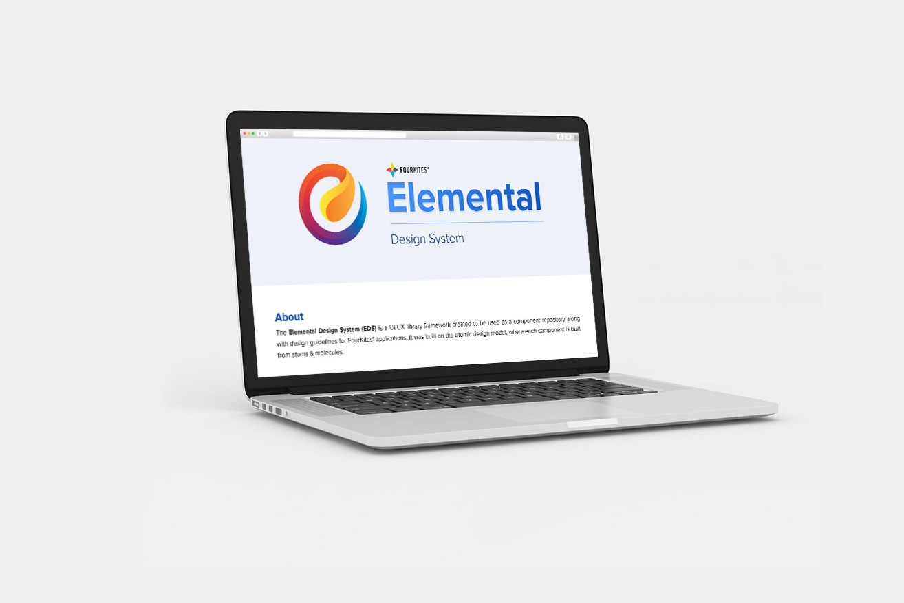
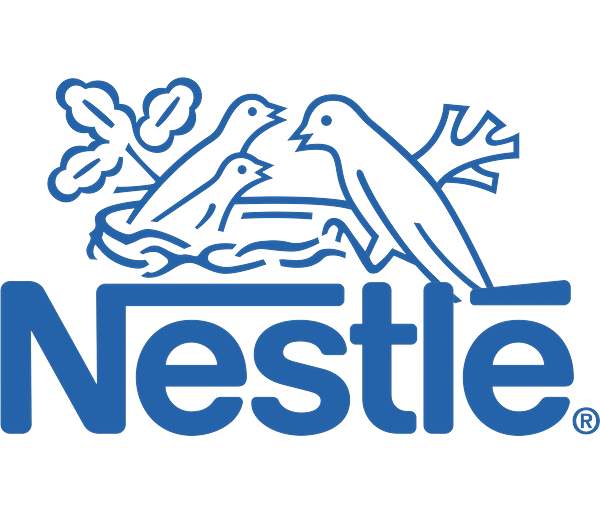

Kevin
Miranda.
Sr. UI/UX & Interaction Designer — Chennai, India
A designer with a keen eye for detail & a knack for visualizing any idea put forth.
Things I'm good at
Figma
Photoshop
Illustrator
Claude
Gemini
UI/UX Design
UX Research
Design Engineering
Wireframing & Prototyping
Design Systems
A little about me
Self-taught and detail-obsessed, with a mind that instinctively organizes chaos into patterns.
Design found me through curiosity, not a classroom — and an eye for the smallest detail is what's kept me there.
I started out in 2015 as a graphic designer in Photoshop and Illustrator, then followed that curiosity into web design and development, and eventually UI/UX — where visual craft, code, and problem-solving meet. Along the way I sharpened the instinct I lean on most: breaking a problem into granular steps and solving it cleanly. Today that instinct goes toward building design systems and untangling complex supply-chain visibility problems.
Off the clock, I'm an animal person through and through — home to two dogs, plus a rotating cast of community dogs and cats I look out for. When I'm not on dog duty, I'm out wandering with a camera chasing good light for architecture and landscapes, or hunting down a cuisine I haven't tried yet. I'll travel across the world just for a meal worth remembering.
My journey so far
Where I've worked & studied
2019 — Now6+ yrs
Senior Interaction Designer
Led UI/UX across FourKites' core tracking redesign, the Elemental Design System, My Workspace, and FourSight AI — plus redesigns of Address Manager, Global Map View, and Unified User Management, and many others.
September 2019 - Present
2016 — 20193 yrs
Junior Product Designer
Built Design Systems, designed & developed the UI & UX for cloud-based ETRM SaaS applications.
June 2016 - September 2019
2015 — 20166 mos
UI/UX Development Intern
Designed wireframes, prototypes, high-fidelity mockups and developed the front-end UI for web & mobile real-time GPS based tracking applications.
November 2015 - May 2016
2013 — 20163 yrs
Master of Computer Applications (MCA)
A postgraduate program covering programming, data structures, and software systems — the formal grounding behind the instinct I lean on most today: breaking a problem into granular steps and solving it methodically.
2013 - 2016
Beyond the deliverables
Leadership & recognition
Leadership & mentoring
- Onboarded and trained new design interns.
- Ran design reviews to keep design quality consistent across the team.
- Drove cross-functional alignment between Product, UX, and Engineering across multiple initiatives — including Unified User Management, My Workspace, the Elemental Design System, and Redesign features.
- Trained fellow designers on complex design flows and internal tooling.
Awards & recognition
- FourKites Dream Team Award (2019, 2021) — recognized for "visually intuitive designs" across the FourKites Redesign and Elemental Design System.
- Leadership recognition — named by FourKites leadership, including CEO & CPO, among the team whose Redesign work customers praised at the 2020 Visibility customer conference.
- Inatech Above & Beyond Award (Q3 2018) — recognized for exceptional performance.


Proof, not just process
Quantifiable impact
A few real numbers pulled straight from the case studies above.
40–60%
Faster component development after the Elemental Design System shipped.
Elemental Design System →11–13%
Improvement in geofence entry-success accuracy over the existing custom shape.
Address Manager →90%+
Design-to-code fidelity after UXAT — up from roughly 60% before.
UX Acceptance Testing (UXAT) →Some of the enterprises that I’ve designed experiences for

Beyond the interface
Through my lens.
When I travel, I like to slow down, notice the details, and document the places and people that make a journey memorable.
Let's talk
Say hello.
Always happy to connect with fellow designers, talk shop about a project, or hear about an interesting opportunity. Drop me an email — I'll get back to you within a couple of days.
- Emailthekevinmiranda@gmail.com
- Based inChennai, India — working worldwide
Chennai, India